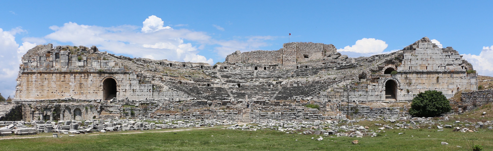

Miletus Theater

- Find Name
- Miletus Theater
- Description
- The great theatre of Miletus, one of Asia Minor's largest, standing in the port city at the mouth of the Maeander where Paul landed on his third journey. Paul had decided to sail past Ephesus to reach Jerusalem by Pentecost, so from Miletus he sent for the elders of the Ephesian church, and there — in the city whose theatre and harbour still dominate the site — he delivered his farewell address, the only speech in Acts addressed to believers.
- Historical Period
- Roman
- Evidence Class
- Contextual
- Interpretations
- The theatre is genuine and the city's identity is certain; the farewell itself is not tied by any inscription to a particular building in Miletus — Acts names the city, not a venue. This entry therefore claims the city and its theatre as the setting, not as the proven spot of the speech.
- Alternative Names
- Theatre of Miletus
- Related Places
- Related Books
- Related People
- Scripture Illuminated
- Biblical Significance
- Acts 20:17-38 records Paul's farewell at Miletus: his ministry 'with all humility of mind, and with many tears,' his warning of grievous wolves and of false teachers rising from within, his charge to feed the church of God, and the elders' weeping because they would see his face no more. The theatre gives that farewell a place: a working port city, thirty miles down the coast from Ephesus, where the elders could actually sail to meet him.
- Artifact Date
- Theatre originally Hellenistic, rebuilt in the Roman period
- Current Location
- In situ, Miletus archaeological site
- Date Discovered
- 1899
- Discovery Location
- Miletus, near Balat, Turkey
- Timeline Era
- Early Church
Awaiting Review Not yet checked against scholarly sources. Treat its claims as provisional until this entry is reviewed. About verification
Last reviewed: not yet reviewed